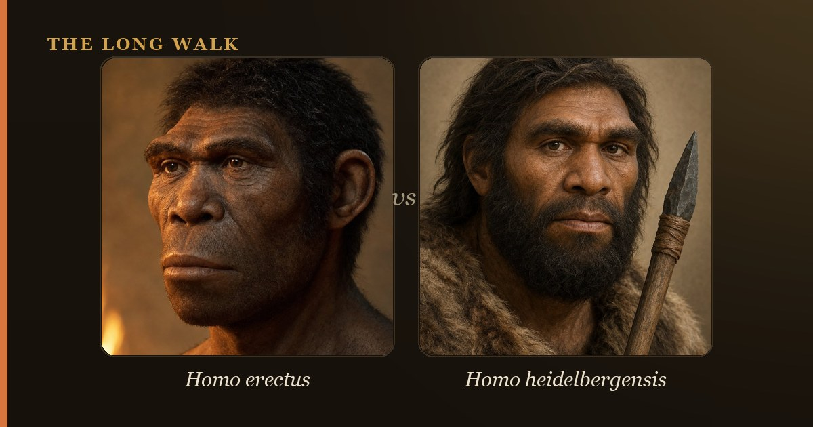

Homo erectus (1.9 million–110,000 years ago) was the first hominin to spread across Africa, Asia, and Europe, with a modest brain of ~900 cc and simple stone tools. Homo heidelbergensis (700,000–200,000 years ago) had a larger brain (~1,200 cc), crafted wooden spears, and hunted cooperatively—likely evolving from erectus populations and giving rise to both Neanderthals and modern humans. The gap between them marks a crucial leap in tool-making, social hunting, and brain expansion.

Understanding the difference between Homo erectus and Homo heidelbergensis is key to grasping how our species evolved from earlier ancestors. Both lived millions of years ago, both were skilled toolmakers, and both spread across Africa and beyond. Yet they lived in different worlds: erectus was a pioneer explorer, while heidelbergensis was a powerful big-game hunter whose brain nearly reached modern size. Tracking the shift from one to the other reveals how human ancestors became smarter, stronger, and more cooperative over hundreds of thousands of years.
The comparison between these two species also shows us that human evolution is not a simple ladder. Instead, it's a branching tree. Homo erectus populations in Africa likely gave rise to heidelbergensis, which then split again into the ancestors of Neanderthals in Europe and our own lineage in Africa. Seeing how erectus and heidelbergensis fit together helps us understand where we came from and what made us human.
| At a glance | Homo erectus | Homo heidelbergensis |
|---|---|---|
| Time period | 1.9 million–110,000 years ago | 700,000–200,000 years ago |
| Brain size | ~600–1,100 cc (avg. ~900 cc) | ~1,100–1,400 cc |
| Body size | Tall, modern limbs (up to 1.7–1.8 m) | Large, robust, cold-adapted |
| Geography | Africa, Georgia, China, Java | Africa, Europe, western Asia |
| Main tools | Acheulean handaxes, simple stone tools | Acheulean handaxes, wooden spears |
| Hunting style | Scavenging, small-scale hunting | Cooperative big-game hunting |
| Descendants | Likely evolved into H. heidelbergensis | Neanderthals (Europe) & modern humans (Africa) |
Who was Homo erectus?
Homo erectus was a revolutionary hominin. Appearing roughly 1.9 million years ago in Africa, erectus had a body almost identical to ours—long legs, short arms, and an upright posture that made walking across savannas efficient. Adults stood as tall as 1.7 to 1.8 meters, with brains ranging from 600 to 1,100 cubic centimeters, averaging around 900 cc. This was a dramatic shift from earlier ancestors: erectus looked like a human in an overcoat, not an ape wearing a hat.
The most striking achievement of Homo erectus was its global wanderlust. Around 1.8 million years ago, erectus populations began leaving Africa, spreading into the Caucasus (Dmanisi, Georgia), across Asia to China (Zhoukoudian), and into the Indonesian islands (Trinil and Sangiran, Java). They were the first hominins to cross significant geographic barriers and adapt to new climates. In Africa and the Middle East, erectus made sophisticated Acheulean handaxes—teardrop-shaped tools that required planning and skill. But in East Asia, populations seemed satisfied with simpler stone flakes and choppers, a pattern that puzzled researchers so much it earned a name: the Movius Line, a geographic boundary between tool styles.
Erectus likely used fire, though the evidence is debated. Some sites show burned bones and blackened earth, suggesting controlled flames for warmth, cooking, and safety. If erectus did master fire, it was a quiet but massive turning point: cooked food is easier to digest, takes less time to chew, and freed up calories for growing bigger brains. Yet erectus itself didn't have a dramatically larger brain than its ancestors—the real brain explosion came later.
Who was Homo heidelbergensis?
Enter Homo heidelbergensis, a species that lived roughly 700,000 to 200,000 years ago. Named after Heidelberg, Germany, where a fossilized lower jawbone (the Mauer mandible) was discovered in 1907, heidelbergensis was erectus's evolutionary heir. The defining trait was brain power: heidelbergensis had a brain of 1,100 to 1,400 cubic centimeters, nearly approaching the modern human range of 1,200 to 1,700 cc. This was a big jump in roughly a million years, and those extra neurons made all the difference.
Physically, heidelbergensis was more robust than erectus. It had prominent brow ridges, a large face, and a sturdy, muscular body built for power rather than grace. Major fossils reveal the species across Africa (Bodo, Ethiopia; Kabwe, Zambia), Europe (Boxgrove, England; Sima de los Huesos, Spain), and western Asia. These populations were not just surviving—they were thriving in ice-age conditions, adapted to cold climates with thick bones and large bodies that retained heat.
The toolkit of heidelbergensis shows unmistakable signs of sophistication. While they still made Acheulean handaxes like their erectus ancestors, heidelbergensis crafted something new: wooden spears. The most famous examples come from Schoeningen, Germany, where archaeologists uncovered spears roughly 2 meters long, dating to around 300,000 years ago. These were not crude sticks but carefully shaped implements with balanced weight, designed for throwing or thrusting. Finding these spears alongside the butchered bones of horses and elephants tells a clear story: heidelbergensis hunted large, dangerous prey, and it did so as a team.
Key differences: Brain, tools, and hunting
The jump from erectus to heidelbergensis was not a subtle shift—it was a transformation. The most obvious change was brain size. Erectus averaged around 900 cubic centimeters; heidelbergensis averaged over 1,200 cc. A bigger brain typically meant better planning, sharper problem-solving, and richer social life. With more neural hardware, heidelbergensis could imagine a hunt before it happened, coordinate multiple hunters, and communicate ideas that erectus likely could not.
Technology tells the same story. Erectus made handaxes, and they were impressive for their time. But heidelbergensis made handaxes *and* wooden spears, hafted tools, and possible evidence of cooking pits and shelters. The Sima de los Huesos cave in Spain, dated to around 430,000 years ago, has yielded over 6,000 stone tools and fossils of 28 individuals, suggesting that heidelbergensis used caves as base camps and possibly buried their dead—a sign of ritual or care for the deceased.
Hunting style also shifted. Erectus was likely a scavenger and small-game hunter, following lions to their kills and using stone tools to crack bones for marrow. Heidelbergensis actively hunted megafauna—horses, elephants, rhinoceroses, and giant deer. The weapons, butchering marks on bones, and multiple kills at single sites show that heidelbergensis organized hunts, probably with shouting signals, assigned roles, and shared meat across the group. This was the birth of cooperative hunting, a skill that would define our species.
Ancestor and descendant: Tracing the family tree
The relationship between erectus and heidelbergensis is fairly clear in the fossil record. Homo erectus populations in Africa, over time, became larger-brained, more robust, and more sophisticated. By around 700,000 years ago, these populations had crossed a threshold: they were no longer erectus but heidelbergensis. It's a smooth transition, not a sudden replacement, which is why some researchers see heidelbergensis as simply an evolved form of erectus rather than a new species entirely. Wherever the line is drawn, the story is one of gradual improvement.
Where it gets complex is heidelbergensis's descendants. In Europe, heidelbergensis populations gradually evolved into Neanderthals, with their distinctive heavy brows and powerful builds. In Africa, heidelbergensis remained relatively similar but eventually gave rise to Homo sapiens—us. This splitting likely happened because African heidelbergensis populations were cut off from European ones during cold climate swings. Over tens of thousands of years, the African line became gracile (slighter), with higher foreheads and less robust jaws. By 300,000 years ago, the earliest members of our species were already present in Africa. Meanwhile, European heidelbergensis continued along its own path, becoming Neanderthals by around 250,000 years ago.
This means heidelbergensis was likely the last common ancestor of Neanderthals and modern humans—though researchers still debate the exact branching point and whether there was any interbreeding. What we do know is that both Neanderthals and modern humans inherited heidelbergensis's large brain, tool-making prowess, and social hunting strategy. The seeds of our humanity were planted in the body and mind of Homo heidelbergensis.
Did they overlap? The vanishing of erectus
A natural question arises: did Homo erectus and Homo heidelbergensis ever meet? In Africa, probably yes, for a brief window. As African erectus populations were transforming into heidelbergensis (around 700,000 to 600,000 years ago), both "species" may have coexisted in different regions or at different elevations. But erectus's last holdouts were in Java, Indonesia, where fossils from Ngandong suggest that some erectus populations lingered until around 110,000 or even 50,000 years ago—long after heidelbergensis had vanished from most of Africa and Europe.
This makes erectus one of the most successful species in human evolution. For nearly two million years, erectus dominated Africa, Asia, and beyond. It persisted through ice ages, spread to new continents, invented new tools, and likely controlled fire. When it finally faded, it did so slowly, with some populations evolving into heidelbergensis and its descendants, while isolated Java populations simply continued much as before, unchanged and eventually extinct. There is something noble in erectus's long reign and quiet end.
Why it matters: The human condition took shape
The transition from Homo erectus to Homo heidelbergensis marks a watershed in human evolution. Erectus gave us upright posture, global exploration, and tool-making. Heidelbergensis gave us a bigger brain, cooperative hunting, and possibly symbolic thought. Together, they set the stage for the emergence of modern humans. By studying erectus and heidelbergensis, we learn how our ancestors accumulated the traits that define us: language, creativity, morality, and the urge to explore.
When you trace the path from Homo erectus to yourself, you are tracing the slow accumulation of advantage. Erectus had a body built for walking; heidelbergensis added a brain for planning. Modern humans inherited both, plus the ability to think abstractly, create art, and imagine the future. The two million years between erectus and today are not an instant—they are a patient, steady climb toward consciousness and civilization. Understanding erectus and heidelbergensis is understanding ourselves in the making.
See how erectus and heidelbergensis branch across the deep-time tree, and where each traveled on the migration map.
Explore the family tree →Frequently asked questions
Who was Homo erectus?
Homo erectus was a revolutionary hominin. Appearing roughly 1.9 million years ago in Africa, erectus had a body almost identical to ours—long legs, short arms, and an upright posture that made walking across savannas efficient.
Who was Homo heidelbergensis?
Enter Homo heidelbergensis, a species that lived roughly 700,000 to 200,000 years ago. Named after Heidelberg, Germany, where a fossilized lower jawbone (the Mauer mandible) was discovered in 1907, heidelbergensis was erectus's evolutionary heir.
- Smithsonian Human Origins — Homo erectus. humanorigins.si.edu
- Smithsonian Human Origins — Homo heidelbergensis. humanorigins.si.edu
- Rightmire, G.P. (2013). 'Homo erectus and Middle Pleistocene hominins.' PNAS 110. pnas.org